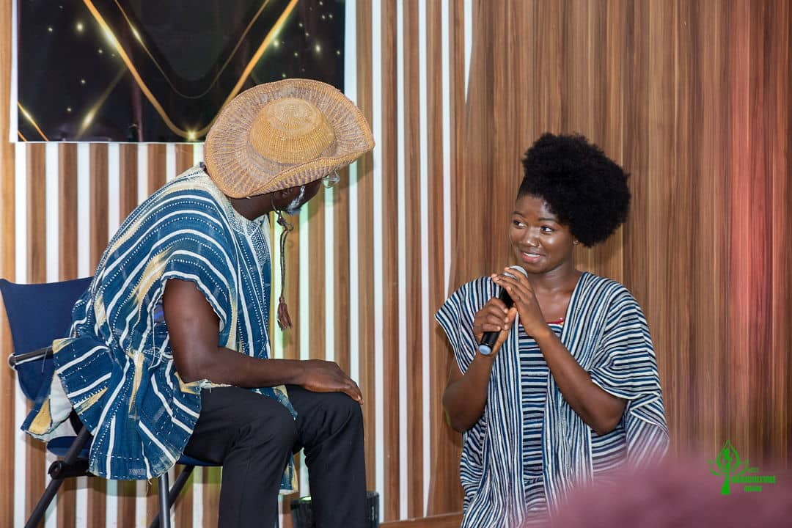
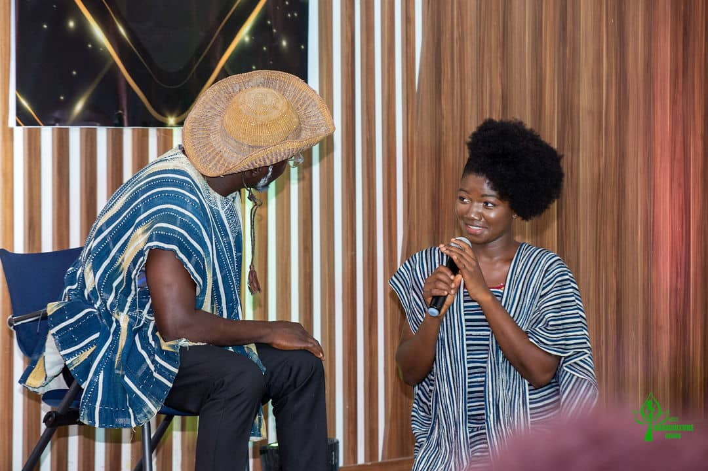

BLOG

 

 BLOG
BLOG
Reflecting on My Reign: Key Achievements and Challenges as Miss Agriculture Ghana 2023, Ruth Awintanga.
As the crowned queen of Miss Agriculture Ghana 2023, my journey began on May 1st, 2023, marking the commencement of a fulfilling and impactful tenure. Throughout my reign, I have encountered various triumphs and obstacles, which I am eager to outline in this report.
Achievements:
Revamping Poultry Farming Business: With the cash prize awarded to me as the winner, I successfully revitalized my poultry farming venture. Previously, my poultry house stood empty due to infections that claimed my birds. However, thanks to the support from Miss Agriculture Ghana, I acquired 100 guinea keets, effectively rejuvenating my business.
Training Farmers: In alignment with my advocacy for poultry farming, I collaborated with Agriculture office officials in Bongo, Upper East Region, to conduct training sessions for 50 farmers. Topics covered ranged from Incubation and Brooding to Medication and Vaccination, emphasizing the importance of proper farming practices. Additionally, we encouraged farmers to explore the synergy between maize farming and poultry farming.
Sensitization Campaigns: Leveraging various platforms such as radio, television, social media, and peer discussions, I embarked on a comprehensive campaign to educate and sensitize individuals on the significance of poultry farming. This effort resulted in 15 females and 9 males expressing keen interest in poultry farming, with some already establishing their own small-scale operations.
Challenges:
Financial Constraints: One of the primary challenges encountered was the limitation of funds. Insufficient resources hindered our ability to reach a wider audience across multiple districts and regions effectively. As a result, our outreach efforts were somewhat restricted.
Resistance to Agriculture Entrepreneurship: Convincing individuals, particularly the youth, to embrace agriculture entrepreneurship proved to be another hurdle. Many perceive poultry farming and other agricultural ventures as high-risk endeavors requiring substantial investment, dissuading them from participation.
Future Endeavors:
Looking ahead, I am committed to furthering my impact and addressing the challenges encountered during my reign. My goals include:
Educating an additional 50 individuals on poultry farming practices before the conclusion of my tenure.
Visiting farmers who initiated their ventures through our sensitization programs, offering support and guidance.
Expanding my poultry farm operations to enhance capacity, with a vision to provide day-old birds and startup kits to aspiring entrepreneurs in the agricultural sector.
In conclusion, my tenure as Miss Agriculture Ghana 2023 has been marked by notable achievements and valuable lessons. Despite facing challenges, I remain steadfast in my dedication to promoting agricultural excellence and empowering individuals within the farming community.